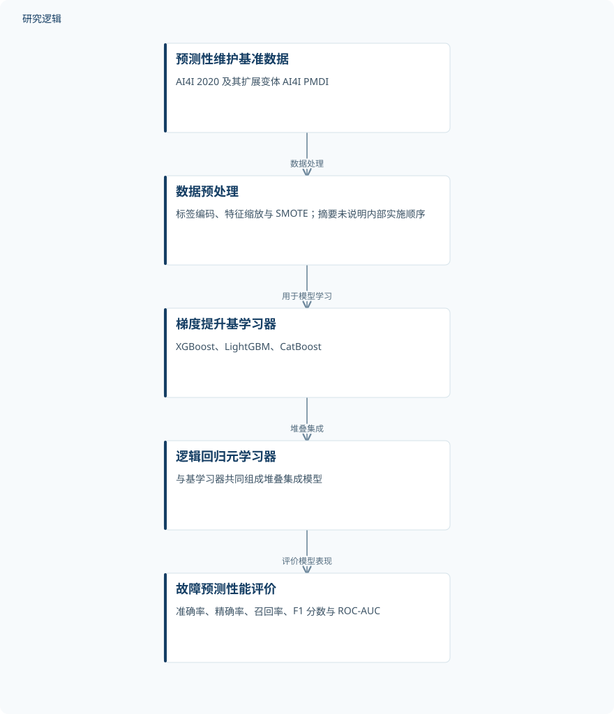

摘要解读
面向工业物联网机器故障预测的AI4I数据集堆叠集成预测性维护框架
Stacking ensemble-based predictive maintenance framework on AI4I datasets in IIoT systems for forecasting machine failures
解读更新 2026-10-28 08:29 · 依据公开摘要整理，未核验全文细节
多种梯度提升模型组合后，能否比单一模型更好地预测设备故障？这项研究在公开预测性维护基准上检验堆叠集成的表现，也提示我们区分高分类指标与真实工业运维收益。
文章目录
故障预测：从模型表现走向维护价值
预测性维护希望在设备故障发生前识别风险，以提高运行可靠性、减少停机。本文围绕这一目标构建集成学习模型，尝试缩小理论研究与工业应用之间的距离。不过，减少停机和支持可扩展应用是研究的目标，不能直接视为已经验证的现场成效。
梯度提升模型打底，逻辑回归完成堆叠
研究使用 AI4I 2020 及其扩展变体 AI4I Predictive Maintenance Dataset with Irregularities（PMDI）。摘要列出的预处理包括标签编码、特征缩放，以及用于处理类别不平衡的合成少数类过采样技术（SMOTE），并关注数据质量问题。
模型以 XGBoost、LightGBM 和 CatBoost 为基学习器，以逻辑回归为元学习器组成堆叠集成。评价指标包括准确率、精确率、召回率、F1 分数和 ROC-AUC，用于从不同角度衡量故障预测表现。
依据摘要整理的故障预测框架


概括摘要明确描述的数据处理、堆叠集成与评价关系，并非论文原图，不表示摘要未披露的训练或验证配置。
下载 SVG图示关系说明
实线表示相邻阶段的信息流，虚线表示跨阶段联系或反馈。
预测性维护基准数据 → 数据预处理：数据处理；数据预处理 → 梯度提升基学习器：用于模型学习；梯度提升基学习器 → 逻辑回归元学习器：堆叠集成；逻辑回归元学习器 → 故障预测性能评价：评价模型表现
基准结果：堆叠集成优于单独基模型
摘要报告，堆叠集成持续优于单独使用的基模型，在 AI4I 2020 上达到 99.16% 的准确率，在 AI4I PMDI 上达到 99.60%，ROC-AUC 接近 0.99。这些结果支持该组合在所用基准条件下的预测表现，但摘要未给出各基模型的具体分数，因此无法据此量化集成带来的提升幅度。
高准确率的适用边界仍需核对
作者明确指出，研究局限于公开基准数据集和人工构造的工业场景。仅凭摘要，无法判断样本规模、故障类别分布、训练测试划分、过采样实施位置，以及比较模型的调参与重复验证范围；这些是当前资料未交代的信息，不代表论文没有开展相应工作。
实时部署、深度模型融合、成本敏感评价，以及 SHAP、LIME 等解释工具，被列为未来扩展。因此，当前摘要不能证明模型已经降低现场停机时间，也不足以判断漏报与误报的实际维护代价。
阅读启发：把预测分数与运维决策分开看
阅读启发：后续阅读可优先核对类别不平衡如何影响召回率和精确率，以及堆叠模型相对各基模型的优势是否稳定。对智能运维读者而言，还值得关注预测结果如何对应维护决策、错误成本与解释需求；这些问题与摘要提出的扩展方向一致，但尚不能由现有结果回答。
以上为本站阅读启发与建议，不是论文已验证的结论。